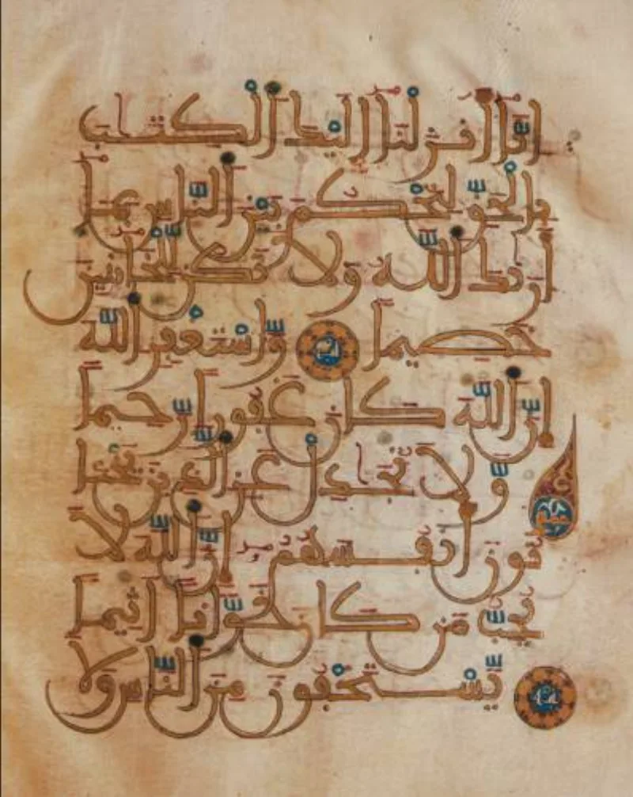
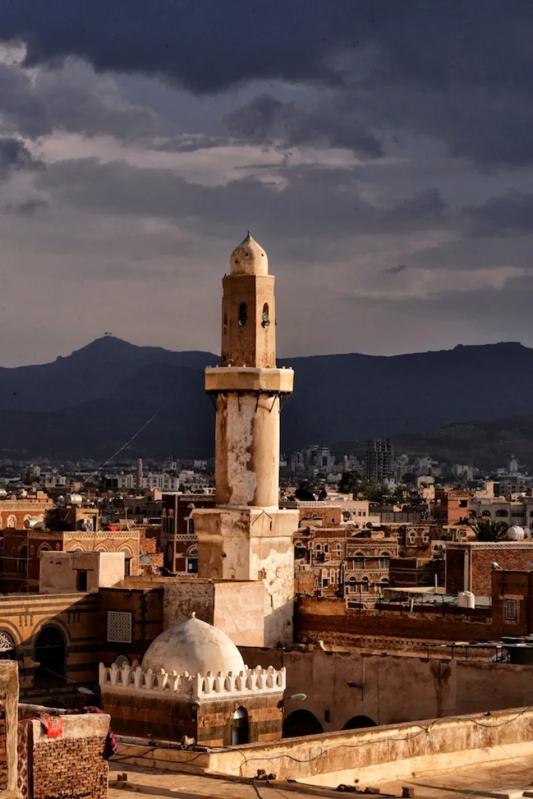

Sanaa: a Quran scraped clean and rewritten
ContestedMuslim scholars have a real answer here. Say so before your friend does.
What was found at Sanaa
In 1972 workers in the Great Mosque of Sanaa, Yemen, found old Quran manuscripts. One had been scraped clean and written over.
Modern imaging recovered the lower layer. The parchment is radiocarbon-dated to the 7th century.
Its wording and surah order differ from the standard text.
What is in print today
The Quran is printed in more than one canonical reading, called qira'at. The Hafs text is used almost everywhere.
The Warsh text is used across North and West Africa. They differ in hundreds of places.
Most are minor, but some change meaning — Quran 3:146 reads qatala, fought, or qutila, was killed.
What a specialist concluded
Keith Small studied the manuscripts closely. His finding is careful.
An early edited form of the consonantal text can be recovered. The original forms of the text cannot.
So "not one dot has changed" is a slogan, not a manuscript finding.
The Muslim answer, at full strength
Khatib and Khan at the Yaqeen Institute, and Al-Azami, answer this well. The qira'at are parallel revealed recitations, not variants in the Western sense.
All fit the Uthmanic skeleton and all were mass-transmitted. None changes doctrine, unlike Mark 16 or John 7:53-8:11.
The Sanaa lower text was a personal or pre-canonical copy, washed once it was superseded.
How strong is this argument?
It cuts both ways, and say so. Against the slogan, it wins.
Against academic standards, the Quran's transmission is genuinely tight — Behnam Sadeghi himself argues the Uthmanic text largely reflects Muhammad's recitation. Use it to level the ground, not to overclaim in reverse.
What to say
"Have you ever compared a Hafs and a Warsh Quran side by side? I would like to see it with you."



How they answer this — at its strongest
They say the different readings are all revealed, agree in meaning, and fit one text.
Khatib and Khan wrote the Yaqeen Institute treatment, and Al-Azami wrote History of the Qur'anic Text. Both answer this. The qira'at — the accepted readings — are not variants in the Western sense at all. They are parallel revealed recitals within the ahruf, the seven modes. Each came down from the Prophet through crowds of reciters. Each fits the Uthmanic frame, and each teaches the same faith.
Pairs like qatala and qutila add to the sense without clashing. Bible variants can take out whole passages, such as Mark 16 and John 7:53-8:11. The lower Sanaa text is read as one man's own copy, or an early draft. It was washed in the proper way once a better text replaced it. That shows Muslims holding the line, just as the promise to guard the Quran in 15:9 implies.
The verdict
It cuts both ways: the slogan falls, but the Quran's text is still tight.
Honest grading cuts both ways. Against the dawah slogan the claim wins. More than one printed text exists today, with real wording differences. The Sanaa lower text is a physical non-Uthmanic Quran. And academic study confirms early editing. So 'letter-perfect, unlike the Bible' is false as stated.
But against academic standards the Quran's transmission is genuinely tight. Behnam Sadeghi published the Sanaa findings with Mohsen Goudarzi in 2012. He himself argues that the Uthmanic text largely reflects the Prophet's recitation. And the qira'at differences are far smaller than the rhetoric suggests.
The double standard is exposed. Wholesale corruption of the Quran is not shown. Use this to level the field, not to mirror the overclaim in reverse.
Sources
- Sanaa manuscript (with Sadeghi & Goudarzi 2012 findings)
- Keith E. Small, Textual Criticism and Qur'an Manuscripts
- Qira'at — canonical readings, Hafs/Warsh
- Sunnah.com — Sahih al-Bukhari 4992 (seven ahruf dispute)